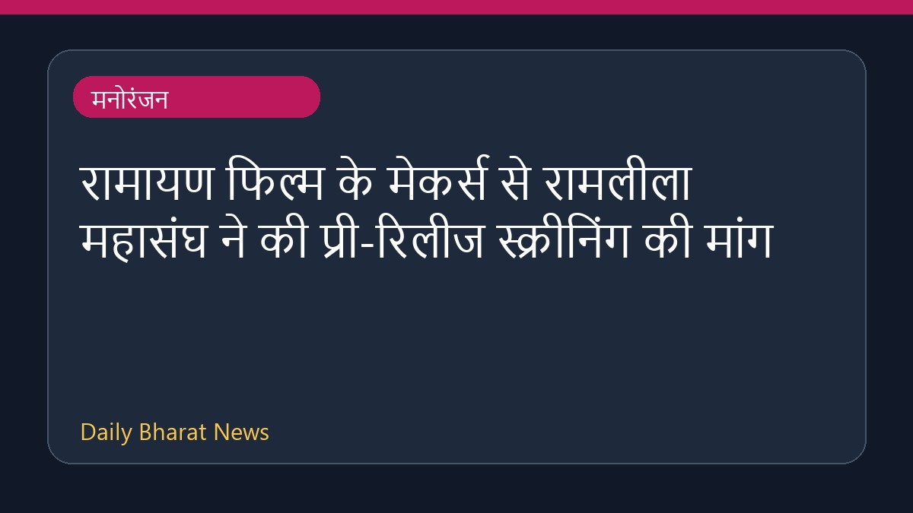

रामायण फिल्म के मेकर्स से रामलीला महासंघ ने की प्री-रिलीज स्क्रीनिंग की मांग

रणबीर कपूर अभिनीत फिल्म 'रामायण' को लेकर विवाद की स्थिति बन रही है। दिल्ली के रामलीला महासंघ ने भगवान राम के चित्रण पर सवाल उठाए हैं और इसे कमजोर बताया है। महासंघ ने फिल्म निर्माताओं से आधिकारिक रिलीज से पहले एक विशेष स्क्रीनिंग दिखाने की मांग की है। साथ ही, चेतावनी दी है कि यदि ऐसा नहीं किया गया तो विरोध प्रदर्शन किए जाएंगे। यह मांग विभिन्न मीडिया रिपोर्ट्स के आधार पर सामने आई है, जिसमें फिल्म के प्रदर्शन को लेकर चिंता व्यक्त की गई है।
मूल स्रोत: Entertainment Sources
'Ranbir Kapoor's Portrayal Of Lord Ram Seems Weak': Ramlila Body Seeks Pre-Release Screening Of Ramayana - NDTV ↗
'Ranbir Kapoor's Portrayal Of Lord Ram Seems Weak': Ramlila Body Seeks Pre-Release Screening Of Ramayana - NDTV ↗